La barre de saut en hauteur fixée
Depuis que j'enseigne, j'observe souvent des jeunes qui n'arrivent pas à comprendre ni à restituer le contenu d'un texte. C'est comme si deux processus se déroulaient en même temps pendant la lecture. L'un, je le vois : les yeux sur le texte, l'écoute, le hochement de tête. L'autre, je ne le vois pas. Il se passe dans la tête. C'est là que se décide si lire devient comprendre. Ce n'est pas parce que je vois et j'entends quelqu'un lire que le processus de compréhension a lieu pour autant.
Lors de la lecture à voix haute en classe ou de la lecture silencieuse, j'ai parfois l'impression que les jeunes et le texte vivent dans deux mondes différents. Pourquoi je le pense ? À cause des réponses à des questions comme : « Qu'est-ce que tu viens de lire ? » ou : « Pourquoi c'est important ? » Je veux que la lecture déclenche quelque chose d'actif chez les jeunes et laisse une trace durable.
Qu'est-ce qui dépend de moi ? Est-ce que je prends un autre texte dans un autre manuel ? Est-ce que je reformule le texte existant pour le rendre plus accrocheur ou le simplifier ? Le temps me manque souvent pour ça. Ou est-ce que je fais la chose facile : j'ai mis le manuel à disposition et je travaille avec. Dans la vie, de toute façon, personne ne vous aide quand vous ne comprenez pas un texte.
Mais le problème ne disparaît pas pour autant. Le texte reste le même — peu importe qui est assis devant lui et quels obstacles surgissent à la lecture. La question n'est donc pas seulement de savoir si un jeune comprend le texte. La question est aussi de savoir quelles conditions je pourrais modifier pour que la compréhension du texte soit tout simplement possible. Je ne vois pas ma tâche comme le fait de placer des élèves devant un obstacle insurmontable et d'évaluer ensuite s'ils peuvent le franchir ou non. Ma tâche, telle que je la conçois, est de créer les conditions dans lesquelles les jeunes ont envie de sauter plus haut — et peuvent le faire.
Ça ne marche pas avec une barre fixée à la même hauteur pour tout le monde. J'ai besoin d'une barre réglable — très probablement même d'une barre dont la hauteur peut s'adapter individuellement aux besoins des élèves. Concrètement : je ne veux pas simplifier le même texte pour tous les enfants, mais créer des variantes individuelles. Et ces variantes doivent correspondre à des objectifs de lecture différents. Un enfant ne doit pas simplement recevoir un texte « simplifié », mais un texte avec lequel il peut travailler et montrer ce qu'il en retient.
Je rêve
Mais à quoi ressemble concrètement une barre de saut en hauteur réglable pour les textes ?
C'est lundi, le 5 janvier 2026, et je suis encore en vacances. Je me bats une fois de plus avec GPT, j'essaie de comprendre comment extraire des contenus de pages de manuels scolaires et les préparer pour le cours. Je reprends ainsi un projet d'août. Mais ce jour-là, la frustration est telle que je regarde l'écran et me dis : « Fais autre chose qu'expérimenter. Quelque chose qui a du sens. »
Pendant que j'observe encore la page du manuel d'histoire, une conversation avec Reed, notre pédagogue spécialisé scolaire, me revient en tête. Nous avions parlé des compétences en lecture des jeunes et de la difficulté que certains ont à comprendre des textes et des consignes.
« Tu dois faire un texte de manuel pour des élèves, pas pour des historiens », je me dis soudain, et je regarde la page du livre avec un sourire, comme si je me retrouvais face à un nouvel adversaire. Bien sûr, un texte de manuel doit être correct sur le plan disciplinaire et cohérent sur le plan didactique. Mais l'espace d'un instant, je mets de côté le regard purement didactique et je me concentre sur la perspective des apprenants : que doit accomplir un texte pour atteindre les jeunes tout simplement ? Je veux un texte de manuel qu'ils peuvent comprendre.
Pas parce qu'il est plus simple, mais parce qu'il leur ouvre une porte.
Parce qu'il les intéresse peut-être et qu'ils peuvent le relier à quelque chose. Peut-être à leur propre monde vécu ? Peut-être que le texte déclenche quelque chose, parce qu'il en naît plus qu'une simple tâche accomplie : une question, une idée ou une conversation avec d'autres. Et cet échange avec d'autres personnes mène peut-être à une compréhension plus profonde, à un partage, à une transmission.
En fait, je veux juste un texte si proche des jeunes qu'ils aient envie de commencer à lire. Ce serait bien.
J'ouvre les yeux, je regarde la page du manuel et je me demande :
« Et comment, exactement ? »
Quels réglages rendent les textes plus faciles ou plus difficiles ?
La question ne me lâche pas. Si les textes doivent devenir des barres de saut en hauteur réglables, je dois d'abord comprendre ce qu'on peut régler sur eux. Pour ça, je dois plonger dans le monde de la didactique des langues, de l'EdTech et des outils d'IA. Je cherche des leviers pour rendre un texte plus facile ou plus difficile. Quelles caractéristiques d'un texte puis-je vraiment modifier en tant qu'enseignant ? La longueur des phrases ? Le vocabulaire ? La structure ? Les exemples ? Les termes spécialisés ?
Je sais assez pour poser les premières questions, mais pas encore assez pour en construire un outil. Je réfléchis un instant et me dis : « Au fond, tu n'en sais jamais assez. Et ce n'est pas nouveau depuis juillet. » Ça ne veut pas dire que je ne sais rien, simplement qu'une petite voix intérieure dit toujours : « Il y a plus à découvrir. »
Depuis juillet, j'appelle ce genre de recherches ma « mise à jour logicielle » : je pose une question à GPT ou à Claude, je lis la réponse et j'y trouve la question suivante. J'accumule ainsi, pas à pas, juste assez de connaissances pour chercher plus précisément. Et c'est comme ça que je commence ici aussi :
Toi : Tu es spécialiste en didactique de l'allemand et expert en différenciation de niveaux de textes pour différents groupes d'élèves. Contexte : J'ai appris que […] Explique-moi quels paramètres peuvent être modifiés efficacement par un enseignant et lesquels ne le peuvent pas. Existe-t-il des échelles pour ces paramètres, entre autres, sur lesquelles on peut « jouer » ?
C'est le premier prompt d'une session plus longue. Je n'utilise pas encore les tours suivants pour travailler un texte, mais pour me faire une première vue d'ensemble. GPT ne me fournit pas de solution toute faite, mais une structure : des termes, des modèles et de nouvelles questions. Et j'apprends ainsi beaucoup sur un sujet que je rencontre chaque jour, mais dont je n'avais jamais vraiment pris conscience.
Comment rendre la difficulté d'un texte mesurable ? Je collecte des termes comme dans un panier : longueur des phrases, longueur des mots, nombre de syllabes, complexité syntaxique, langue scolaire, didactique de l'allemand langue seconde (DaZ) et enseignement disciplinaire sensible à la langue. Je ne sais pas encore ce qui sera vraiment utile pour mon outil. Un instant, je me demande : «Comment les recherches de Björnsson auraient-elles évolué s'il avait déjà eu accès à GPT ou à Claude ?»
En parcourant les différentes approches, une chose devient vite claire : la difficulté d'un texte ne se résume pas à une seule formule. Certaines propriétés sont faciles à compter. La longueur des phrases, la longueur des mots, le nombre de syllabes ou le nombre de propositions subordonnées se mesurent. D'autres facteurs échappent à une échelle simple : les connaissances préalables, l'intérêt, la proximité culturelle ou la question de savoir si un exemple parle vraiment aux jeunes. Parmi les propriétés mesurables, je découvre encore des classements différents. La profondeur des propositions subordonnées est par exemple représentée sur une échelle, tandis que d'autres modèles travaillent avec des pourcentages ou des formules. Je ne vois pas de logique commune qui me permettrait de piloter toutes les propriétés d'un texte.
C'est précisément ce manque qui commence à m'intéresser. Je demande à Claude et à GPT de rédiger un résumé sur les «ANGLES MORTS DE LA SCIENCE – Ce que la recherche ne sait PAS bien mesurer». Ces échanges en chat avec l'IA ressemblent à une carte postale d'un pays inconnu. Je suis simplement ma curiosité. Au bout d'un moment, je réalise que ce savoir est important. J'ai affaire à quelque chose que je n'arrive pas encore tout à fait à saisir.
Je continue à collecter des paramètres. Il ne s'agit pas de constituer une encyclopédie complète, mais simplement une liste de travail utilisable. À partir des suggestions, je crée un premier tableau avec 16 paramètres. Ce n'est pas encore la liste finale. C'est un état intermédiaire où je veux simplement recenser tous les réglages possibles.
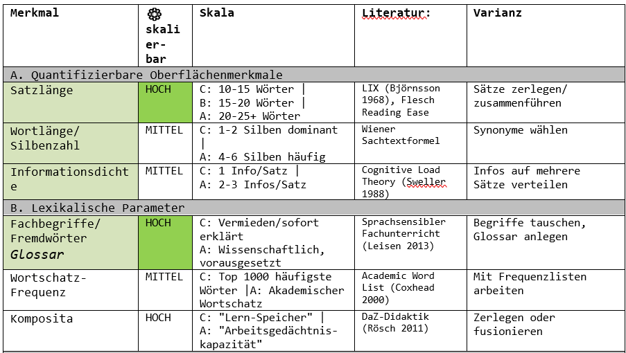
Le jour même, j'examine le tableau des paramètres et j'imagine comment je pourrais les déplacer.
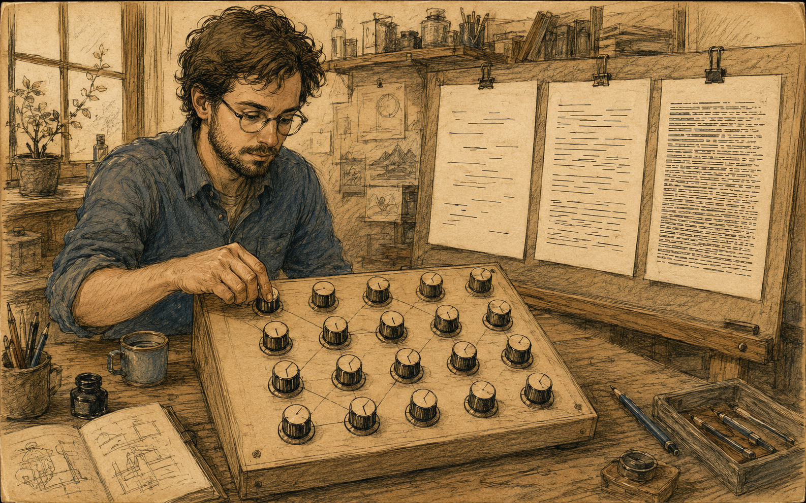
De cette façon, je pourrais rendre un texte plus facile ou plus difficile. J'imagine différents curseurs que je déplace simultanément dans la même direction. Selon leur position, le nouveau niveau du texte prend forme.
Du sweet spot à la liste de 7 paramètres pilotables
Je suis soulagé que la liste de travail ne comporte «que» 16 paramètres pour différencier les textes et pas davantage. Mais je réalise vite que ces paramètres ne sont pas des curseurs mathématiques. Certaines choses, l'IA les saisit très bien : le nombre de mots, la longueur des phrases ou certains schémas syntaxiques. Ça se complique là où entrent en jeu le sens, la motivation ou l'adéquation culturelle. Une IA peut raccourcir une proposition subordonnée ou remplacer un mot difficile. Mais elle ne peut pas décider seule si un texte simplifié reste suffisamment précis et s'il parle aux jeunes. Ce qui complique les choses : comment demander à l'IA de modifier quelque chose quand l'effet ne se voit que dans la salle de classe ?
Et c'est ainsi que j'en arrive à la question : «Que peut faire l'IA, au fond ?» Dans les premiers mois avec GPT, je partais du principe que l'IA était sans limites. Aujourd'hui, je devrais poser la question plus précisément : «Que peut faire l'IA ? – et que ne peut-elle pas faire ?» Et même cette réponse n'est valable que pour l'instant, parce que demain elle pourrait déjà être différente.
Mon impatience me pousse parfois à brûler une étape. Alors j'expérimente quelques paramètres sur des premiers textes. Avec le paramètre «Réduction», je réalise qu'il y a des conflits entre les paramètres. Ils ne sont pas toujours compatibles entre eux. Quand je raccourcis les phrases, la densité d'information augmente. Quand je réduis les termes spécialisés, la précision en souffre. Adapter un texte n'est donc pas un simple jeu de curseurs, mais un arbitrage entre lisibilité et exactitude.
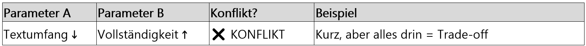
Je n'ai pas encore de solution pour ce dilemme, mais il me semble d'une certaine façon stimulant. Je réalise que mon intention initiale d'utiliser tous les paramètres en même temps revient à une tentative par force brute. Ça ne fonctionnera pas. Je ne peux pas téléverser un tableau Excel avec 16 paramètres et m'attendre ensuite à une réponse sensée de GPT ou de Claude. Je vais devoir faire une sélection.
Un texte isolé, je l'aurais probablement déjà modifié et rédigé à la main depuis longtemps. Mais je ne veux pas seulement modifier un texte : je veux pouvoir en modifier et en comparer beaucoup à l'avenir. Depuis un moment, je travaille en parallèle avec GPT et Claude. C'est comme jouer au tennis à trois. Je continue et je pose la question à Claude :
Toi : Combien de «paramètres» une IA peut-elle raisonnablement maîtriser en même temps lors de la création d'un texte ?
J'observe les lignes dépliées dans les «Thinking lines» et je dois vraiment rire en lisant ça :
Claude : «C'est une méta-question sur mes propres capacités et limitations.»
Une réponse qui sonne comme de la métacognition. Je suis stupéfait et fasciné. Même si ça ressemble à une auto-évaluation, ça ne me montre évidemment pas directement ce qui se passe réellement dans le modèle. Mais j'aime regarder et je me surprends à poser la question : «Qui lui a appris ça ?»
Comme on pouvait s'y attendre, la réponse ne se résume pas à : «16 paramètres, c'est bien.» Ce sont les combinaisons qui comptent. Claude m'explique en détail quels paramètres ne posent pas de problème et lesquels peuvent entrer en conflit. La réponse courte est :
CLAUDE : Sweet Spot : 5–7 paramètres restent bien contrôlables simultanément. Encore gérable : 8–12 paramètres, mais avec des conflits d'objectifs croissants. Zone de rupture : à partir de 13 paramètres, conflits et incohérences augmentent nettement.
Je ne prends pas ces chiffres comme un résultat scientifique, seulement comme une valeur de référence issue du dialogue avec l'IA. Un petit nombre de paramètres reste contrôlable, trop nombreux génèrent des conflits. GPT et Claude mettent en garde dans ce dialogue : à partir d'environ huit paramètres pilotés simultanément, les conflits peuvent augmenter. Ce sont des informations pour une future liste de priorités. Une liste qui définit quels paramètres l'emportent quand ils se contredisent.
Je repars donc d'une liste vierge pour une nouvelle phase de développement. Je teste chaque paramètre avec des questions similaires à celles des niveaux didactiques : Une IA peut-elle le modifier de façon ciblée ? Puis-je formuler des valeurs ou des descriptions compréhensibles pour A, B et C ? Et ne chevauche-t-il pas trop fortement un autre paramètre ? Ensuite, je vérifie les conflits, conditions et dépendances entre paramètres, je les déplace sur la liste et j'essaie de répondre à une question : «Comment une IA doit-elle procéder quand elle ne peut pas décider ce qui est le plus important ?»
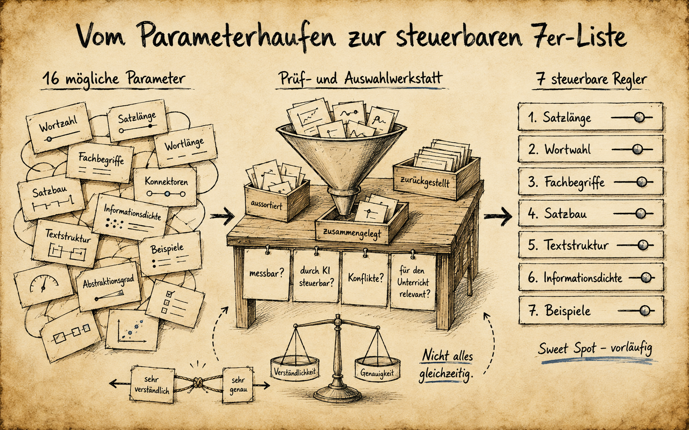
Après plusieurs tours, il reste sept caractéristiques issues de cinq groupes de caractéristiques.
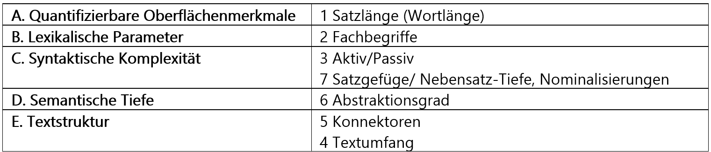
Je me les représente comme les curseurs d'une chaîne stéréo : réglables individuellement, mais c'est seulement ensemble qu'ils déterminent la difficulté d'un texte.
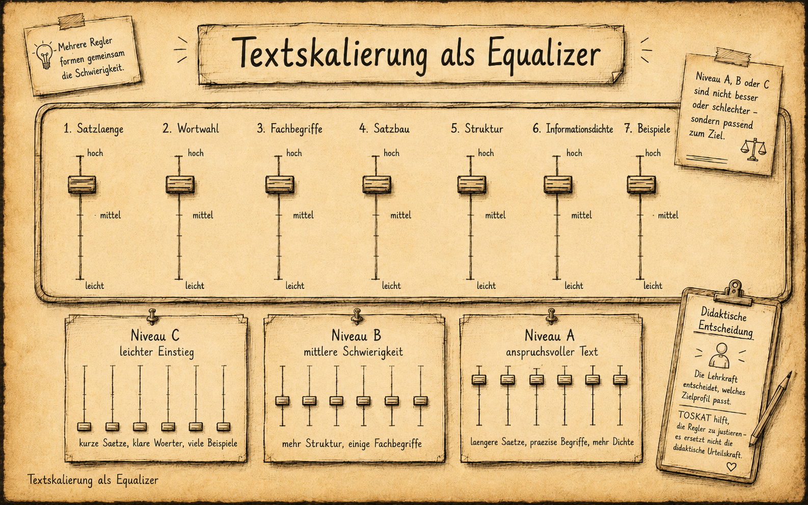
Je suis un peu impatient et je veux tester la liste tout de suite en modifiant un texte. Je télécharge un texte documentaire avec la liste des 7 paramètres dans GPT et je dis :
Toi : Crée une nouvelle version du texte au niveau B. Utilise pour cela les valeurs de paramètres de la liste.
Je veux vérifier le texte produit. GPT propose un LIX de 40 à 45 pour le niveau B. Je ne trouve aucune source solide, aucune liste qui dise : « 7e année, niveau B correspond exactement à LIX 40–45. » Pourtant, ce chiffre n'est pas sorti de nulle part. Je le traite donc non pas comme une valeur cible scientifique, mais simplement comme un repère issu de mon dialogue avec l'IA. Et j'apprends que je ne peux pas transposer des valeurs de référence d'autres langues vers l'allemand sans précaution. Je remplace aussi le nombre de mots fixe par une solution plus souple, avec une valeur de référence et des formulations relatives : le niveau B correspond à 100 pour cent. Le niveau C en représente peut-être 50 à 70 pour cent, le niveau A entre 130 et 150 pour cent.
Pour chacun des sept critères, je me fais générer des valeurs pour les niveaux A, B et C. La liste des 7 devient ainsi un premier ensemble pilotable, qui combine valeurs en pourcentage, valeurs absolues et descriptions en langage naturel.
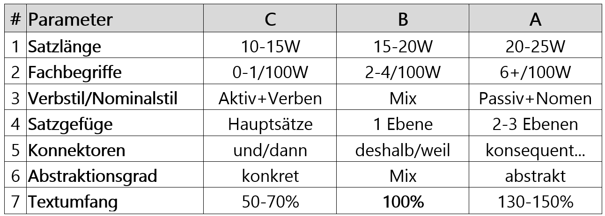
La longueur des mots, je la laisse réguler par d'autres paramètres. J'intègre le LIX comme métrique de validation. Concrètement : une fois que l'IA a mis le texte à l'échelle, le workflow vérifie si le texte se situe à peu près dans la plage LIX souhaitée. Et ça fonctionne.
Trois jours plus tard, le 8 janvier, je pourrais à nouveau me dire : « J'ai terminé. Projet bouclé. » Mais je ne suis pas encore satisfait. C'est plus compliqué que prévu. Je peux maintenant différencier sur trois niveaux. Mais est-ce que ça fonctionne de manière universelle, globale ? Est-ce que j'ai vraiment un outil utilisable pour mon enseignement ? Cette liste est-elle vraiment juste ?
Je commence à construire
Ces derniers mois, j'ai souvent mesuré combien il existe de possibilités de différenciation en éducation. Et à partir de là, il y a des possibilités de différencier la différenciation, et ainsi de suite. Il y en a très probablement une infinité. « L'infini, c'est beaucoup », je me dis — et je commence avec deux.
Toi : […] travailler de manière itérative avec 5 paramètres « durs » et 2 paramètres « nice to have » de la liste des 7.
Pour ce premier essai, je traite la longueur des phrases, le volume du texte, les termes spécialisés, la structure syntaxique et le degré d'abstraction comme des paramètres durs. Le style verbal et les connecteurs s'ajoutent comme réglages optionnels pour la finition. Ce n'est pas encore un ordre universel. C'est mon premier essai pour hiérarchiser les sept curseurs. Mais aussitôt surgit la question suivante, issue de la phase de vérification croisée : que se passe-t-il quand deux critères entrent en conflit et que l'itération ne suffit pas à le résoudre ? Par exemple, simplicité versus exactitude disciplinaire. Au niveau tertiaire, la rigueur disciplinaire ne peut jamais être trop précise ; la simplicité n'y joue presque aucun rôle. Au niveau B, je ne peux pas emprunter ce chemin-là. Là, l'accessibilité et la compréhensibilité comptent plus que la précision disciplinaire maximale. Un texte que personne ne comprend est peut-être correct sur le plan disciplinaire, mais il est sans effet en classe. Et c'est exactement là qu'entre en jeu la simplicité. Si nécessaire, je suis prêt à mettre en retrait la précision académique au profit de la compréhensibilité — sans toucher à l'exactitude disciplinaire. Je prends le risque de la critique des experts, tant que le texte reste correct sur le fond et que la simplification est didactiquement justifiée. C'est mon choix. C'est mon levier.
En hiérarchisant les critères, je crée en même temps une hiérarchie des conflits. Elle indique à l'IA ce qui prime en cas de conflit. De là se développe un workflow en trois phases : d'abord les cinq paramètres durs, qui doivent produire un texte fonctionnel, pas encore poli. Ensuite les deux paramètres optionnels pour la finition. Et pour finir, les contrôles et les réajustements.
Puis j'ai l'idée de distinguer la partie flexible selon la situation. Un texte de sciences naturelles a peut-être besoin de réglages différents d'un texte d'allemand ou de géographie-histoire. Mon schéma rigide 5+2 devient ainsi un modèle de pensée 4+3. Mais ça complique à nouveau les choses. J'ai besoin de nouveaux rôles et je dois retravailler la matrice des conflits. Je commence à tester la cohérence du modèle et à le développer.
Toi : Analyse mes réponses et vérifie leur cohérence, les redondances et les éléments manquants, afin qu'une section spécifique « génération de texte » puisse ensuite être créée pour le YAML.
Plus je définis précisément les curseurs, plus je vois clairement leur limite : aucun indicateur chiffré ne peut me dire si un texte simplifié fonctionne vraiment en classe. Pour ça, j'ai besoin de quelqu'un qui connaît les élèves.
Je pense à Reed, le pédagogue spécialisé de l'école. Peut-être qu'il voit quelque chose que mes mesures ne captent pas. Nous discutons de la différenciation des textes et j'écoute son point de vue. Comment les textes agissent-ils ? Est-ce que « facile » est vraiment facile ? Et un texte adapté par un SHP est-il vraiment plus accessible pour un élève dyslexique que le texte original du manuel ?
Dès le départ, je sais que la différenciation des textes n'est pas une science exacte. C'est pourquoi j'ai besoin du retour de Reed. Son expérience, je ne la trouve ni dans un indicateur chiffré ni dans la littérature spécialisée.
Après quelques tours supplémentaires, j'ai une ébauche. Selon le type de texte et la source, je peux pondérer et modifier les mêmes sept critères différemment, sans devoir réinventer une liste à chaque fois. Ma petite liste des 7, je la comprends maintenant comme un gabarit. Pour commencer, je construis trois variantes simples :
Texte informatif : simplifier les phrases, clarifier la structure et remplacer prudemment les mots difficiles. MINT : conserver les termes spécialisés, mais les expliquer ; clarifier les processus et les liens cause-effet. Texte littéraire : simplifier la langue avec prudence et préserver autant que possible l'atmosphère et le sens.
Les sept caractéristiques de ma liste de 7 restent en place comme modèle didactique de réflexion. Mais leurs rôles ne sont pas fixés une fois pour toutes. Dans la première configuration 5+2, j'en traite cinq comme « dures » et deux comme finitions optionnelles. Dans le modèle 4+3 développé ensuite, quatre forment le noyau et trois sont priorisées selon le contexte. Le YAML ne met pas en œuvre les sept paramètres comme une liste fermée : il combine les templates noyau et contexte, et utilise le modèle 4+3 comme fallback.
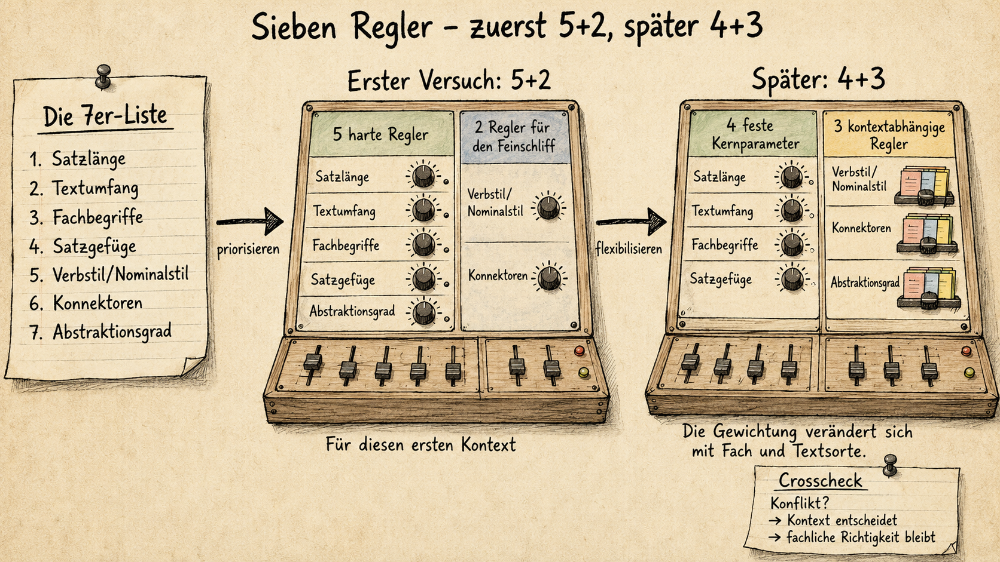
Le lendemain, le 9 janvier, j'ouvre un chat et je commence simplement à écrire…
Moi : Je m'intéresse aux possibilités théoriques de différencier des textes à l'aide de l'IA et à leurs fondements. Je m'intéresse aux bases empiriques et scientifiques, au fonctionnement de l'IA. Je veux développer un modèle de façon itérative et créer un YAML avec des paramètres intégrés, qui me permette de guider l'IA pour mettre les textes à l'échelle […]
Le prompt continue et fait au final plus de 300 mots. J'y écris tout ce que je porte en tête : le déroulement, la liste globale des caractéristiques, les biais possibles et les premiers paramètres expérimentaux. De là émerge une configuration YAML, et avec elle une réponse possible à la question centrale : comment faire travailler tous ces réglages ensemble de manière fiable ?
Je ne construis plus une fiche de travail
Jusqu'ici, j'ai surtout travaillé sur les réglages : quelles caractéristiques d'un texte puis-je modifier ? Lesquelles sont plus importantes que d'autres ? Maintenant je réalise : de bons réglages ne suffisent pas. Il me faut une architecture qui garantit qu'ils sont appliqués de façon fiable. L'idée de base semble simple au premier abord : je télécharge tout et j'obtiens à la fin mon texte de lecture adapté.
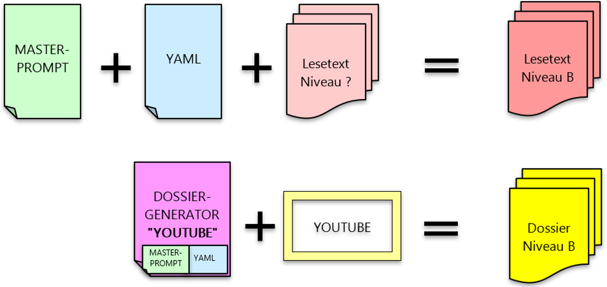
TOSKAT doit fonctionner de deux manières. D'une part comme composant d'un programme plus large, par exemple dans un générateur de fiches. D'autre part comme outil autonome pour la mise à l'échelle de textes. Pour cela, j'ai besoin d'une logique d'utilisation.
Quand décide l'IA ? Quand est-ce que je décide ? Quand le système vérifie-t-il le texte ? Et quand est-ce que je reçois un rapport qui me montre ce qui a été modifié ? Mais ce qui compte le plus pour moi, c'est autre chose : je ne veux pas avoir à réfléchir à nouveau à chaque fois après le téléchargement pour savoir ce qui fonctionne comment. En deux minutes, il doit être clair ce que je dois saisir et ce qui se passe ensuite. Le formulaire one-shot est mon premier essai pour rendre cette utilisation aussi simple que possible. En sauvegardant dans Visual Code, je remarque encore quelque chose :
Je n'utilise plus l'IA pour créer une fiche de travail.
Je construis avec l'IA un outil que je comprends moi-même, que je peux tester et reconfigurer. Même si je n'en suis pas encore tout à fait conscient, je remarque : ce que je fais n'a plus grand-chose à voir avec utiliser — c'est davantage développer. Et c'est exactement comme ça que je me sens.
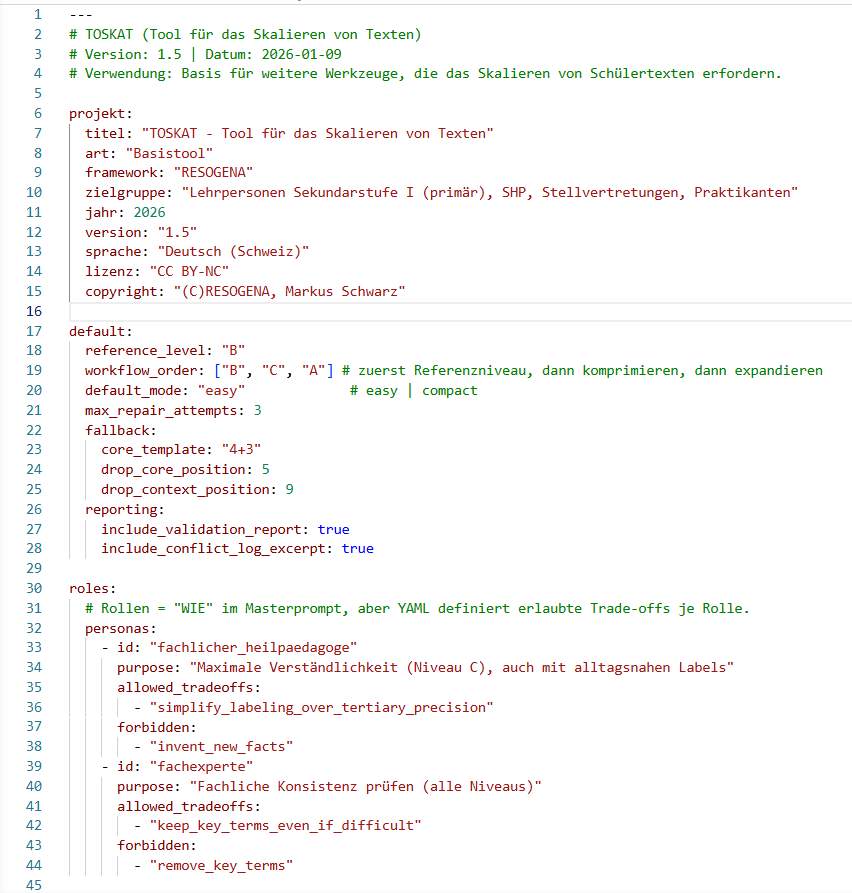
La configuration YAML du 9 janvier 2026 comprend environ 2 650 mots et 831 lignes — c'est le travail de plusieurs jours. Au final, je n'ai pas seulement construit TOSKAT comme composant d'un framework futur. Sans le réaliser, j'ai aussi rédigé un plan d'architecture pour d'autres modèles prompt-YAML. TOSKAT est une brique LEGO. Avec ce plan d'architecture, je peux construire d'autres briques LEGO. Le système se compose de deux niveaux : le YAML décrit ce qui est contrôlé — paramètres, valeurs et règles. Le masterprompt décrit comment l'IA interprète cette configuration et l'exécute. Je peux développer les deux niveaux séparément, mais en les gardant coordonnés. Et le plus important dans tout ça : je sais ce qui est écrit, où et pourquoi, parce que je comprends comment mon code fonctionne. Et TOSKAT ? Ça signifie « TOol pour la mise à l'échelle de textes ».
Je n'ai pas écrit ça seul. L'IA ne l'a pas écrit seule non plus.
C'est une co-construction : une intention humaine, des propositions artificielles et mes décisions.
Louis XIV : Mon outil fonctionne-t-il ?
Trois jours plus tard, le lundi 12 janvier, je veux tester mon outil : une fois dans Claude, une fois dans GPT. Je charge le YAML, le masterprompt et une page du manuel scolaire sur l'absolutisme. Puis j'observe ce qui se passe. Claude vérifie les fichiers et m'affiche le formulaire one-shot.
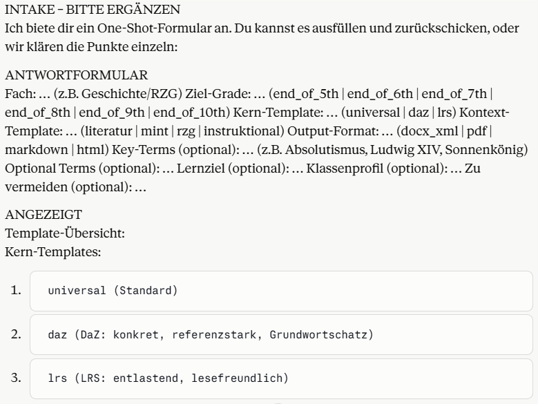
Et je remarque quelque chose de nouveau : il y a des champs de réponse cliquables. Je n'avais jamais vu ça dans Claude. Je trouve ça cool. Je remplis le formulaire comme une fiche de commande pour une pizzeria. Puis j'attends. Je réalise seulement là quelle tâche j'ai donnée à Claude. Ça prend très longtemps et Claude écrit : « Un moment… » Ce qui ne présage généralement rien de bon. Au final, ça marche quand même.
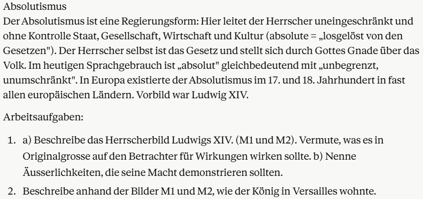
Après chaque ajustement, Claude vérifie le nouveau texte. Plusieurs fois, les résultats sont hors des valeurs cibles et le workflow repart de zéro. Je m'imagine l'IA livrant une bataille interne entre LIX, WSTF et Flesch — trois indices de lisibilité calculés que j'ai intégrés exactement pour ça. Claude gagne. Au final, j'ai trois textes différents sur le thème de l'absolutisme. Voici le niveau B :
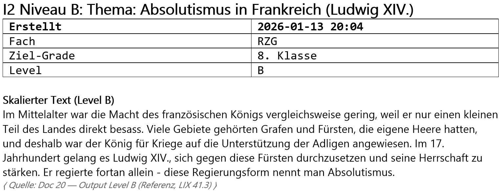
Au premier coup d'œil, le texte de lecture est correct. Je teste maintenant le même déroulement avec GPT. Lui aussi reconnaît les fichiers, demande les paramètres et produit un output avec un mini-rapport. Mais le chemin parcouru est différent de celui de Claude.
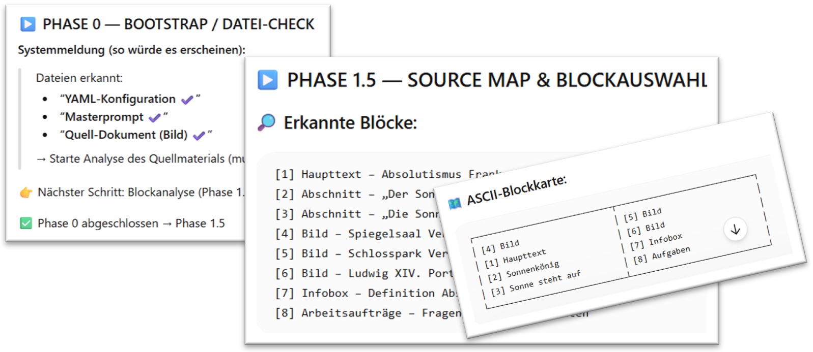
GPT scanne la page du manuel, la découpe en blocs, me laisse choisir le texte source et affiche encore une fois sa mission avant de commencer la production. Le workflow tourne et à la fin, l'output et le mini-rapport apparaissent à l'écran. Les trois textes sont-ils vraiment différents ?
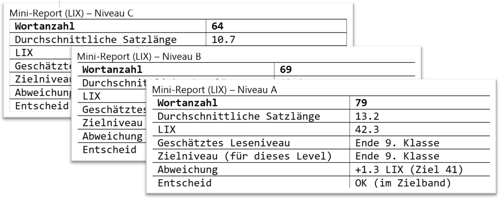
Oui. Les indicateurs divergent et les textes semblent de difficulté différente. Dans ce premier test, TOSKAT fonctionne techniquement : le workflow tourne et les textes produits se distinguent par leurs indicateurs. Un indice LIX montre seulement que quelque chose a changé. Il ne dit pas si un élève comprend mieux le texte. Ce qui compte, c'est si quelque chose reste, si quelqu'un pose une question, continue à lire ou peut restituer le contenu avec ses propres mots. Ce retour me manque encore — et sans lui, TOSKAT reste juste un jouet sur mon écran.
Le même après-midi, j'ai une leçon de géographie/histoire. Je ne veux pas organiser un grand test comme en décembre avec les maths. Après une courte introduction et la présentation de la tâche, je lance donc presque en passant : « Est-ce que quelqu'un veut travailler sur une feuille GPT ? »
J'explique brièvement que j'ai construit un outil qui me permet de rendre des textes plus faciles ou plus difficiles. Pour la double page « L'absolutisme en France », j'ai créé avec Claude trois textes de lecture à des niveaux de difficulté différents. Et je voudrais bien savoir s'ils sont vraiment plus faciles ou plus difficiles. Et si quelqu'un a envie de le vérifier. La réponse n'est ni « oui » ni « non », mais : « Vraiment ? »
Je ne sais pas pourquoi certains élèves prennent l'une des trois versions posées sur les tables. C'est à peu près la moitié de la classe. C'est précisément pour ça que le reste de la leçon devient intéressant. Je peux me concentrer sur quelques élèves, pendant que l'autre moitié travaille de façon autonome sur le dossier d'apprentissage. En circulant et en posant des questions, je discute avec les élèves de ce qui leur paraît difficile ou facile. Ce sont des mots, des passages et des contenus du texte sur l'absolutisme. Ils comparent les textes, soulignent des passages et s'expliquent mutuellement pourquoi quelque chose est simple ou non. Je n'avais jamais vu des élèves travailler aussi intensément sur un texte. Je ne m'y attendais pas du tout.
Je dois une fois de plus m'avouer que je dois absolument améliorer mes mises en place de test. Ce premier essai me montre des réactions et de nouvelles questions, mais pas encore vraiment un gain d'apprentissage. J'ai complètement sous-estimé le potentiel de cette leçon et à la fin je me dis : « Il faut que tu refasses ça. »
Le lendemain soir, le mardi 13 janvier 2026, je retravaille la configuration YAML et j'enregistre TOSKAT en version 2.5 sur mon ordinateur portable.
En mars, je veux réutiliser TOSKAT pour le nouveau thème de géographie sur l'Europe. Au prochain essai, je veux regarder de plus près. Je dois réfléchir à ce que je veux vraiment observer et à la façon dont je consigne ces retours. Je ne veux pas seulement vérifier si l'outil fonctionne, mais s'il aide vraiment les jeunes.